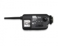

Opas收发一体的专业闪光灯引闪器是专业的可分组闪光灯收发器，它能把机载闪光灯与相机实现离机灯同步闪光、离机灯能分组控制、还能遥控相机拍照。Opas亦可遥控相机拍照和离机灯同步闪光一起实现。Opas产品使用了全球免费的2.4GHz频道，采用FSK调制方式，性能更稳定。
外观挺拉风，兼容能力还行，能满足一般需要了
外观很拉风，远看很专业 装5号电池，对于经常玩闪灯的来说挺方便。 别的貌似也没啥优点了。该有的基本都有了。
附件里带了一堆线，但就是没有3.5>PC口的 唤醒睡眠状态的引闪器接收端会有延迟造成漏闪 作为遥控器的时候按上面的test按钮也会有延迟（似乎是故意的，但这样不好啊）